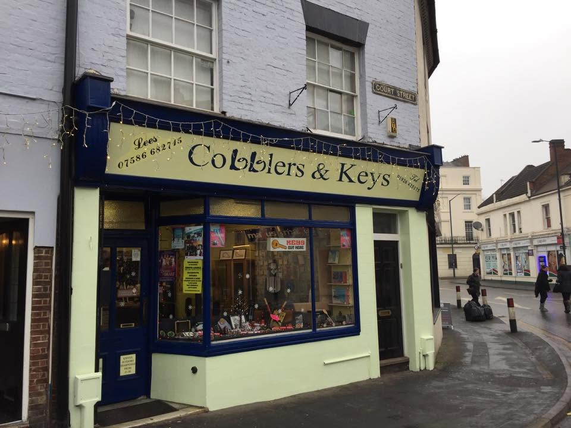
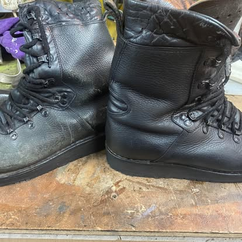

Our Story
Thirty-plus years of fixing things properly
Cobblers & Keys is a genuine independent workshop on Court Street — a master shoe repair service that's grown, over 30-plus years, into a small local institution for keys, locks, sharpening, and a couple of unexpected sidelines.
The Craft
A Master Shoe Repairer, Still at the Bench
At the heart of Cobblers & Keys is a genuine trade skill: 30-plus years of hands-on experience repairing shoes and boots. That's not a marketing figure — it's the standard every pair gets, from a scuffed everyday shoe to a well-loved pair of work boots that just need a new sole and a bit of care.
It's the kind of experience that's increasingly hard to find on a British high street, and it's the reason people keep coming back to a small shop on Court Street rather than binning a pair of boots that could easily be saved.

Repaired on Court StreetHow It Grew
From Shoe Repairs to a Full Workshop
The name says it plainly: Cobblers & Keys started as shoe repair, and key cutting and locksmith work grew alongside it, the way a good local trade shop tends to add services its regulars actually ask for.
Walk in today and shoe repair sits alongside key cutting done while you wait, and a locksmith service for the bigger jobs — lockouts, lock changes, and general advice. Knife and scissor sharpening from just £1.50 rounds out the everyday trade side of the shop.
Then there are the two sidelines that surprise most first-time visitors: an official Zippo dealership, with repairs and servicing for lighters, and a sideline in custom 3D-printed decorative gifts, made to order. It's a genuinely unusual mix for one small shop — and that's rather the point.
How We Work
Straightforward, Skilled, and Welcoming to Everyone
Three things you can expect from a visit to Court Street.
Real Trade Skill
30+ years of shoe repair experience isn't picked up quickly — it shows in work that's done properly the first time, not patched over.
Everyone Welcome
Flagged as an LGBTQ+ friendly business on Google — a small note, but one worth stating plainly: everyone is welcome through the door.
A Genuine High-Street Shop
A registered local company on Court Street, not a chain — the same face behind the counter, building the same reputation, one repair at a time.
Rated 4.9 out of 5 from 45 Google reviews — one of the better-reviewed independent trade shops in Leamington Spa, built up one satisfied customer at a time.
Come and See for Yourself
Still Fixing Things Properly, One Repair at a Time
The best way to understand Cobblers & Keys is a visit — bring in a repair, a key to cut, or just a knife that needs an edge. Court Street is easy to find, right in the town centre.